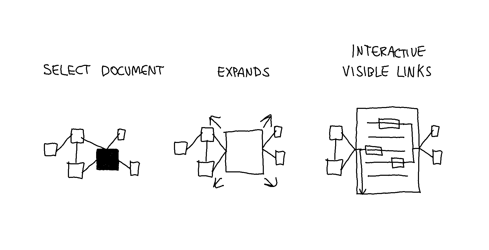
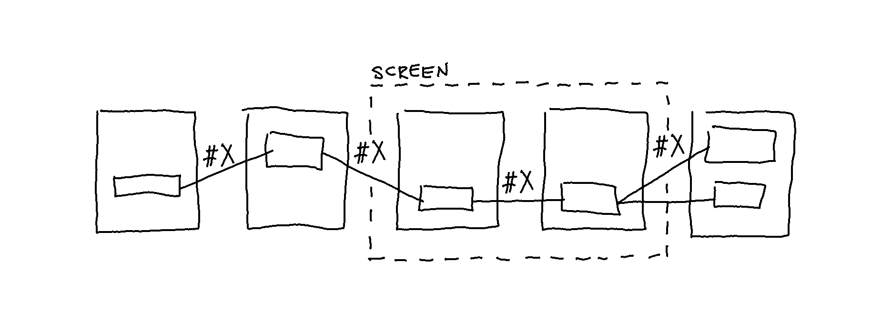

Prototyping: Switching View Modes
From Inventory View to Vertical and Lateral Mode
While in Inventory View, selecting a node opens a document. Selecting another node will close the already-open document and open the other. There are two versions for how this might look and work.
Version 1

In the image above, the linked documents are always visible and join in the middle of the open document.
Version 2
The image below shows an alternate version in which the linked documents are only visible when hovering on a link in the open document (called Vertical View).
In both versions, if a link is selected within an open document, the corresponding document is opened, and the linked content items align (in Lateral Mode).
Open/Close Mechanism
While in Lateral Mode, if another link within one of the two open documents is selected, the other document closes, and the corresponding document opens. This open/close mechanism allows traveling by links while retaining one document as the main document. The main document is always the document from which a link is selected. In the image below, the open/close mechanism is shown.
Note that only the first-level linked nodes of an open document are visible in Lateral Mode. As indicated in the last step in the image above, closing a document will hide its linked nodes unless linked to one of the open documents.
Lateral Mode (as in the lateral reading strategy) enables checking the original context of a transcluded content item through deliberate action. Through the use of tag links, it is also possible to sort which link types should be displayed. This means it is possible to travel by a link path according to a selected tag (e.g., #comment, #elaboration, #definition).

Video Demonstration
In version one the neighboring documents are always shown, whereas in version 2, hovering on a link shows documents as nodes on the side.
Version 01
Version 02
Other (Failed) Attempts
Attempts at Visualizing Opening a Document in Inventory View
In the video below, the links are visualized as vertical lines on each side of the document. The thickness of the lines corresponds with the number of linked content items. One of the drawbacks here is that there is too much information visualized simultaneously.
The video below demonstrates a slow transition from Inventory View to Vertical Mode. The question here is, what is the best way to animate a link within an open document to a closed document. In this example, hovering on a link has the effect of extending the line to the content item within the open document, and the closed document (node) scales up. A drawback is that the scaling effect does not immediately capture attention.
Attempts at Visualizing Opening a Document in Vertical Mode
Once in Vertical Mode, the selected link opens the corresponding document. The question is how the linked content objects should interact. In this example, upon opening a document by selecting a link, the linked content objects align, and the links fade out. The alignment of the content items may suffice.